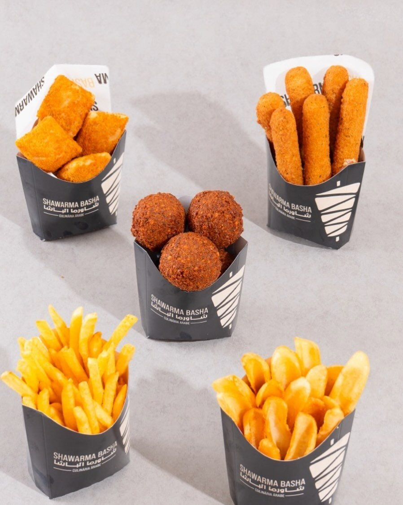

Início · Venha ao salão
Venha ao salão
A casa do Imbuí tem salão para comer no local, sem reserva. Abre todos os dias a partir das 17h.
Onde fica
R. Alberto Fiúsa, 76 · Imbuí
A reportagem de 2018 situava o trailer “na praça que fica entre a Rua das Gaivotas e a Jayme Sapolnik”; a ficha do Google de hoje usa a frente da Rua Jayme Sapolnik.
Horário
A partir das 17h
Abre todos os dias a partir das 17h. O fechamento aparece diferente no cardápio online, na ficha do Google e no Instagram, então confirme pelo WhatsApp antes de sair, principalmente em feriado.
Como é a casa
O que a ficha do Google informa
- Consumo no local, retirada e entrega
- Entrada com acessibilidade para cadeira de rodas
- Empresa que acolhe a comunidade LGBTQ+
- Se identifica como uma empresa de empreendedoras
“Será um prazer recebê-los novamente em nossa casa.”Resposta da casa a uma avaliação no Google

Avaliações
4,3 com 376 avaliações no Google
“Vim com minha família, grupo de 5 pessoas para conhecer, o ambiente é muito agradável, atendimento maravilhoso e atencioso do início ao fim. Fui bem orientado sobre as opções e tivemos com isso escolhas acertivas. A atendente do caixa foi muito simpática … Voltarei outras vezes...”Gilson S., Google · refeição no local
“O shawarma estava delicioso!!! Sem dúvidas, muito bem feito. … A todo instante, os funcionários estão limpando o local, com isso passa mais credibilidade na qualidade e serviço”Amanda R., Google · Local Guide
“A demanda estava alta e o pedido demorou bastante para ficar pronto. Mas valeu a espera porque o shawarma de kebab estava delicioso.”r4b3l0, Google · Local Guide
Dúvidas frequentes
Perguntas comuns
Precisa reservar?
Não. Um cliente marcou na avaliação: “Não é necessário fazer reserva”.
Dá para ir em grupo?
Sim. Uma avaliação do Google conta a visita de uma família, num grupo de cinco pessoas. Para grupo grande, avise pelo WhatsApp.
Aceita cartão no salão?
A forma de pagamento no salão não está publicada hoje. Confirme pelo WhatsApp.
Bateu a fome?
O espeto está girando no Imbuí.
Monte o pedido aqui e mande pronto para o WhatsApp da casa, ou venha ao salão. A partir das 17h, todos os dias; confirme o horário de fechamento pelo WhatsApp.